COLEGIO ICEI · 1º B
LA ESMERALDA PERDIDA
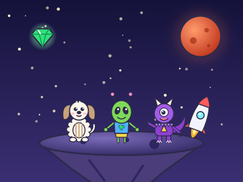
UN CUENTO PARA ELEGIR TU PROPIA AVENTURA
CUENTOS QUE ABREN CAMINOS
LA ESMERALDA PERDIDA
UN CUENTO ESCRITO E IMAGINADO POR
SIX SEVEN 67, MENDOZA
Y GATO CON SOMBRERO
1º GRADO B · COLEGIO ICEI · 2026
¿QUÉ ES UN CUENTO INTERACTIVO?
- 📖LEÉS EL CUENTO.
- 🪧LLEGÁS A UN CRUCE. ¿QUÉ HACE EL PERSONAJE?
- ABVOS ELEGÍS EL CAMINO.
- 🏁CADA CAMINO TIENE SU FINAL.
TOCÁ LAS FLECHAS DE ABAJO PARA PASAR LAS PÁGINAS.
NUESTROS PERSONAJES
NUESTROS LUGARES
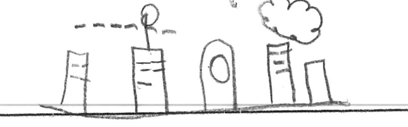
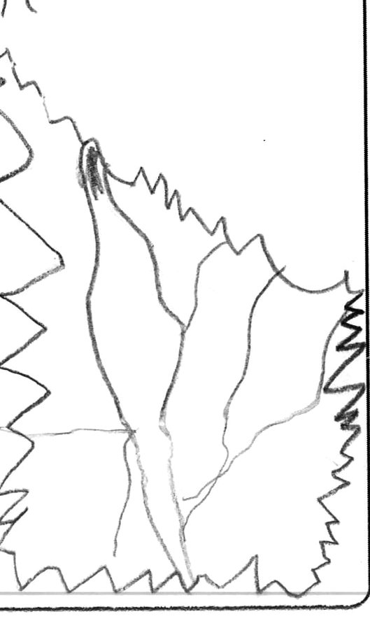
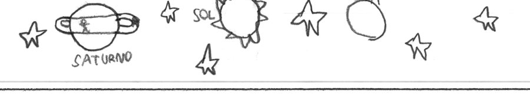
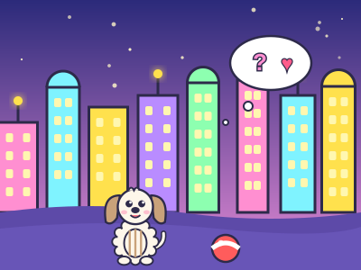
EN UN LUGAR MUY LEJANO HABÍA UNA CIUDAD FANTÁSTICA. ALLÍ VIVÍA HUELLITAS, UN PERRO PEQUEÑO Y PELUDO. LE ENCANTABA JUGAR CON PELOTAS, PERO QUERÍA UN NUEVO AMIGO.
1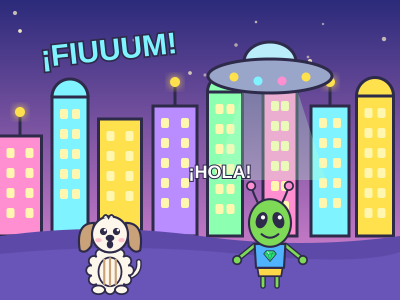
UNA MAÑANA… ¡FIUUUM! ATERRIZÓ UNA NAVE. DE ADENTRO SALIÓ UN EXTRATERRESTRE PEQUEÑITO, VERDE Y MUY AMABLE. —¡HOLA! VENGO DE MARTE —DIJO.
2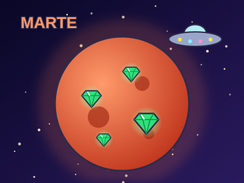
MARTE ES UN PLANETA ROJO LLENO DE ESMERALDAS BRILLANTES. AL EXTRATERRESTRE LE ENCANTA ANDAR EN SU NAVE Y JUNTAR ESMERALDAS.
3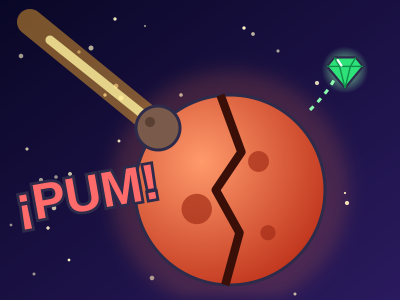
PERO DE PRONTO… ¡PUM! CAYÓ UN METEORITO Y SE PERDIÓ LA ESMERALDA MÁS IMPORTANTE. SI NO LA ENCUENTRAN RÁPIDO, ¡MARTE SE VA A ROMPER POR LA MITAD!
4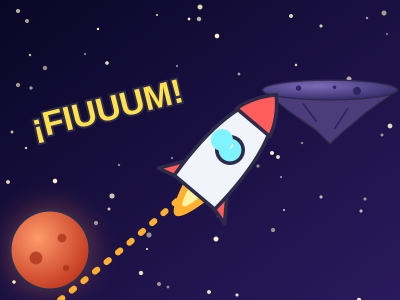
HUELLITAS Y EL EXTRATERRESTRE SUBIERON AL COHETE. ¡FIUUUM! HACÍA EL FUEGO DEL COHETE. VOLARON HASTA UN PLANETA DESCONOCIDO QUE FLOTABA EN EL ESPACIO.
5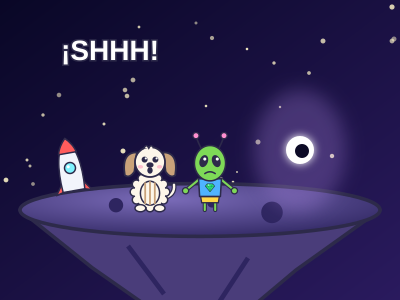
ERA UN PLANETA OSCURO Y SILENCIOSO. ¡SHHH! DE REPENTE APARECIÓ UN PERSONAJE MISTERIOSO CON UN SOLO OJO…
6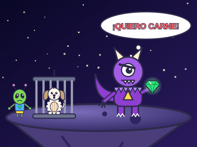
¡ERA GALÁCTICO, UN MONSTRUO MALO Y RARO! TENÍA LA ESMERALDA Y ¡ATRAPÓ A HUELLITAS! —¡QUIERO CARNE! —GRUÑÓ. SI SE ENOJA, ¡PUEDE CREAR UNA EXPLOSIÓN!
7¡LLEGASTE A UN CRUCE!
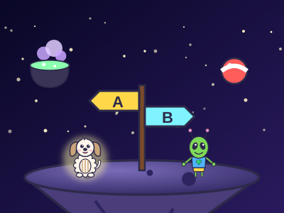
HUELLITAS ES UNA MASCOTA MÁGICA. ¿QUÉ HACEN LOS AMIGOS?
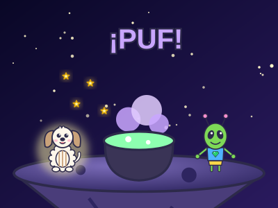
HUELLITAS SACUDIÓ SU PELO MÁGICO Y CAYÓ POLVO DE ESTRELLAS. EL EXTRATERRESTRE LO MEZCLÓ EN UN CALDERO. ¡PUF! ¡LISTA LA POCIÓN MÁGICA!
A1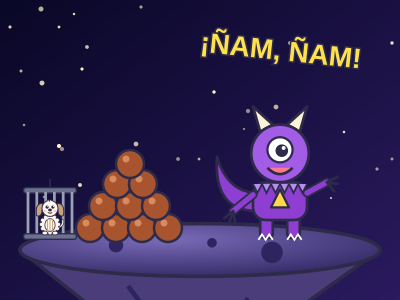
TIRARON LA POCIÓN Y… ¡APARECIÓ UNA MONTAÑA DE ALBÓNDIGAS! GALÁCTICO COMIÓ Y COMIÓ. ¡ÑAM, ÑAM! ¡POR FIN TENÍA SU CARNE!
A2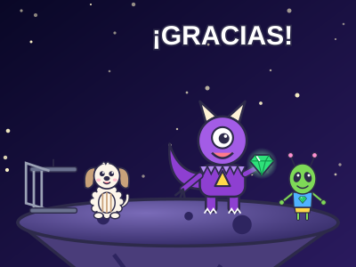
CON LA PANZA LLENA, GALÁCTICO SE PUSO CONTENTO. ABRIÓ LA JAULA DE HUELLITAS Y LES DEVOLVIÓ LA ESMERALDA. —¡GRACIAS! —DIJO.
A3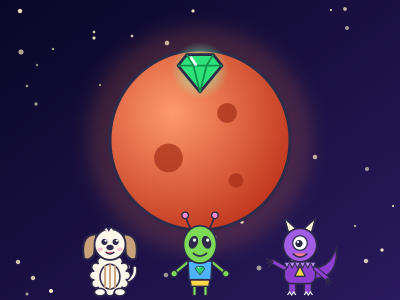
VOLARON A MARTE Y PUSIERON LA ESMERALDA EN SU LUGAR. ¡MARTE SE SALVÓ! Y HUELLITAS CONSIGUIÓ UN NUEVO AMIGO: EL EXTRATERRESTRE.
FIN DEL CAMINO A
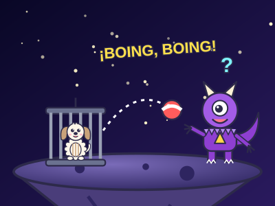
HUELLITAS TIRÓ SU PELOTA ENTRE LAS REJAS. GALÁCTICO LA MIRÓ CON SU OJO GRANDE. ¡BOING, BOING! ¿QUÉ ES ESO?
B1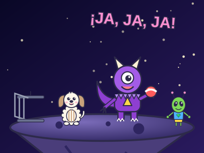
GALÁCTICO ATRAPÓ LA PELOTA Y SE RIÓ: ¡JA, JA, JA! ¡POR FIN ALGO LE GUSTABA! ABRIÓ LA JAULA PARA JUGAR CON HUELLITAS.
B2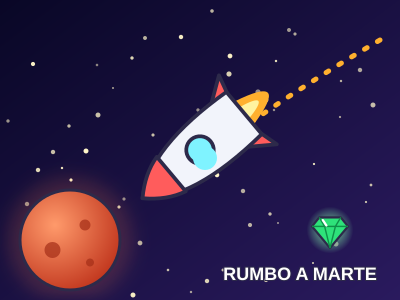
JUGARON TANTO QUE GALÁCTICO SE VOLVIÓ AMABLE. LES DEVOLVIÓ LA ESMERALDA Y SUBIÓ AL COHETE CON ELLOS, RUMBO A MARTE.
B3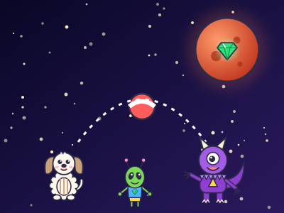
PUSIERON LA ESMERALDA Y MARTE SE SALVÓ. HUELLITAS CONSIGUIÓ UN NUEVO AMIGO: ¡GALÁCTICO! AHORA JUEGAN A LA PELOTA ENTRE LAS ESTRELLAS.
FIN DEL CAMINO B
ESCRIBIERON E IMAGINARON ESTE CUENTO
👽 SIX SEVEN 67
FELIPE · LUZ · JULIÁN · BRUNO · PALO · ESPE · MAXI · ZIKI
🐶 MENDOZA
ROCCO · DONATELLA · FRANCA · LOLA · CORI · BALTA · LOREN · BAUTI
🎩 GATO CON SOMBRERO
LORENZO S. · UZI · OLI · MERCE · FELICITAS · JULIA · CAMILA · MÍA
1º GRADO B · COLEGIO ICEI · 2026
¿QUÉ FINAL TE GUSTÓ MÁS?
TOCÁ UNA LETRA PARA VOLVER A LEER ESE CAMINO.
¡GRACIAS POR LEER NUESTRO CUENTO!
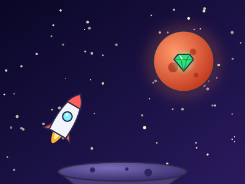
¡SE PERDIÓ LA ESMERALDA MÁS IMPORTANTE DE MARTE! UN PERRITO PELUDO, UN EXTRATERRESTRE AMABLE Y UN MONSTRUO CON UN SOLO OJO VIVEN UNA AVENTURA EN EL ESPACIO.
¡Y VOS ELEGÍS EL CAMINO!
CUENTOS QUE ABREN CAMINOS · COLEGIO ICEI